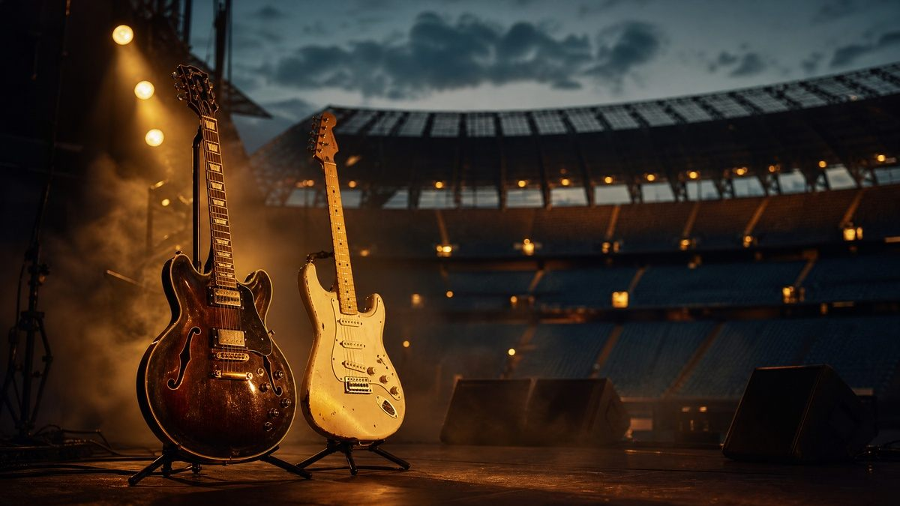

Оазис избират сцената пред студиото: Лиъм Галахър отваря вратата за концерти през 2027 г.

След едно от най-очакваните завръщания в съвременната музика — реюнионът на братята Галахър през 2025 г., шестнайсет години след раздялата на групата — Оазис изправят почитателите си пред ясен избор. Тази седмица Лиъм Галахър категорично изключи излизането на нов студиен албум на групата, но остави вратата отворена за допълнителни концерти през 2027 година, съобщават LBC и информационната агенция AP, цитирани от множество международни издания.
Защо не се стига до нов албум
Причината, която посочва самият Галахър, е показателна за момента, в който се намира групата: всяко ново парче би било съдено не само по музикалните си достойнства, а спрямо тежестта на едно от най-обичаните наследства в британския рок. Певецът е категоричен, че ако Оазис някога запишат нов материал, звукът трябва да остане автентично техен — без опити да гонят актуални тенденции. Засега групата предпочита да не поема този риск и приканва публиката просто „да се наслади на концертите“.
Живият концерт като истинско наследство
Именно тук е и по-важната новина: след успешното реюнион турне на братята Галахър, нови представления за 2027 година вече се обсъждат, макар официален график и зали все още да не са обявени. Решението говори красноречиво за нещо, което Оазис доказват от три десетилетия — величието на една песен не се измерва с нейната новост, а с това колко хора продължават да я пеят заедно, песен след песен, концерт след концерт.
Точно затова песните, които вече съществуват, невинаги се нуждаят от продължение — понякога най-силното решение е да им се даде сцена.
Оазис показаха, че една песен може да живее с десетилетия. Твоята история също заслужава песен, която остава завинаги.
Разкажи я с глас за 2 минути — от 9,90 €